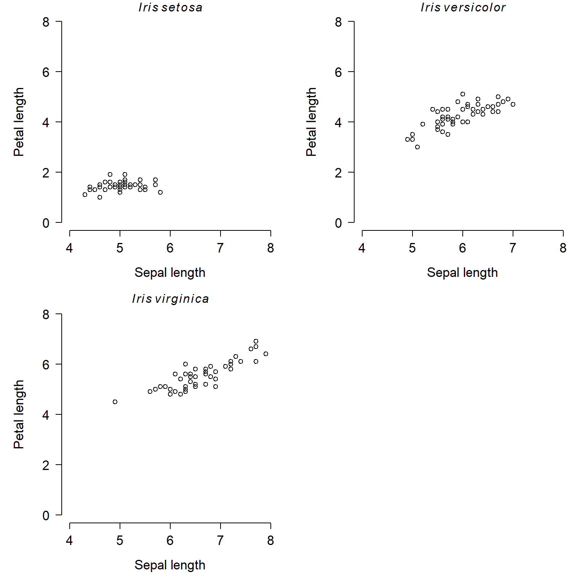
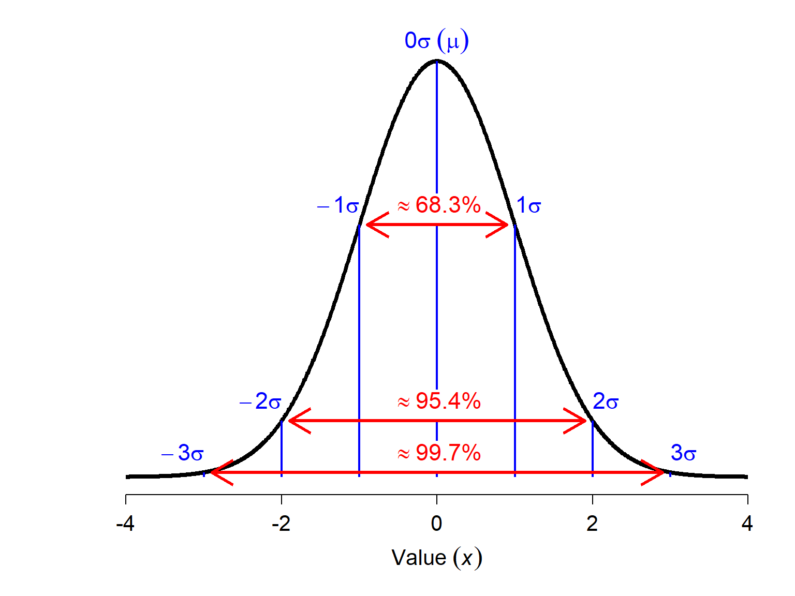
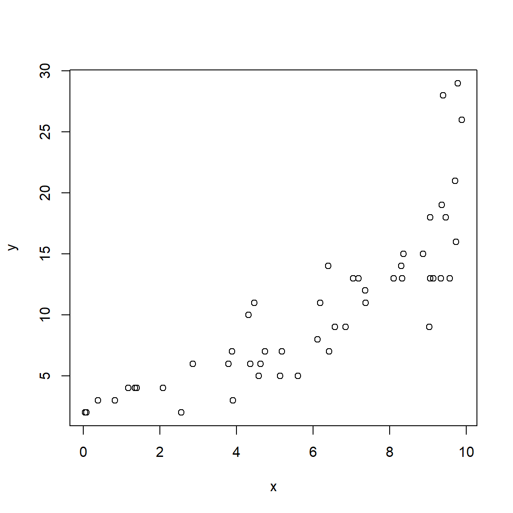

5.3 Log-linear models
This is one of several sections exploring some common GLM applications. For most of these applications we will work through two examples. First, an analysis of simulated data, and second, an analysis of a real dataset. Simulating a dataset suitable for an analysis is an excellent way to learn about the analysis method, because it helps you see the relationship between the data-generating process and the analysis.
This module explores GLMs with a log link function and Gaussian (normal) family: a log-linear model. Log-linear models are models with a linear relationship between the logarithm of the response variable and the predictor variables. While “log-linear” often describes GLMs with Poisson families, it can mean any GLM with a log link function.
5.3.1 Example with simulated data
This example was designed to illustrate the difference between a log-linear GLM and a linear model on log-transformed data.
# random number seed for reproducibility
set.seed(42)
# sample size
n <- 50
# coefficients and residual SD
beta0 <- 2.5
beta1 <- 0.25
sigma <- 2
# x values
x <- runif(n, 1, 8)
# linear predictor
eta <- beta0 + beta1 * x
# inverse link function
mu <- exp(eta)
# response variable
y <- rnorm(n, mu, sigma)
dat <- data.frame(x=x, y=y)
# plot the data:
plot(x,y)
The relationship looks somewhat linear, but we might have some reason to suspect that it is not either because we have a biological reason or because we can see the slight curve characteristic of exponential functions. Let’s try two models: a log-linear GLM, and a LM on log-transformed data.
# model 1: GLM with log link
mod1 <- glm(y~x, data=dat, family=gaussian(link = "log"))
# model 2: LM on log-transformed data
dat$logy <- log(dat$y)
mod2 <- lm(logy~x, data=dat)You may get an error message that illustrates a problem with fitting GLMs that doesn’t come up with linear models: starting values. Recall that linear models are fit by essentially solving linear algebra problems. GLMs are fit using an iterative process. This iterative process needs reasonable starting values in order to have a good chance of finding a good solution. R can figure out good starting values for many GLMs, particularly GLMs that use the canonical link function for the family (see table in previous section). Because the canonical link for the Gaussian family is the identity function, not log, R may need you to provide the starting values. One way to find good starting values is to find a way to linearize the model. In this case, we can simply log-transform the response and use the coefficients as starting values for our GLM.
# not run:
starts <- coef(lm(log(y)~x))
mod1 <- glm(y~x, data=dat, family=gaussian(link="log"),
start=starts)Interestingly, both models estimated model parameters that were pretty close to the true values.
summary(mod1)##
## Call:
## glm(formula = y ~ x, family = gaussian(link = "log"), data = dat,
## start = starts)
##
## Deviance Residuals:
## Min 1Q Median 3Q Max
## -5.7735 -1.1230 0.4361 1.4853 3.1162
##
## Coefficients:
## Estimate Std. Error t value Pr(>|t|)
## (Intercept) 2.478735 0.025559 96.98 <2e-16 ***
## x 0.252960 0.003716 68.07 <2e-16 ***
## ---
## Signif. codes: 0 '***' 0.001 '**' 0.01 '*' 0.05 '.' 0.1 ' ' 1
##
## (Dispersion parameter for gaussian family taken to be 3.806117)
##
## Null deviance: 27488.14 on 49 degrees of freedom
## Residual deviance: 182.69 on 48 degrees of freedom
## AIC: 212.68
##
## Number of Fisher Scoring iterations: 3summary(mod2)##
## Call:
## lm(formula = logy ~ x, data = dat)
##
## Residuals:
## Min 1Q Median 3Q Max
## -0.22312 -0.01971 0.01146 0.02941 0.11028
##
## Coefficients:
## Estimate Std. Error t value Pr(>|t|)
## (Intercept) 2.510009 0.022596 111.08 <2e-16 ***
## x 0.247561 0.004033 61.38 <2e-16 ***
## ---
## Signif. codes: 0 '***' 0.001 '**' 0.01 '*' 0.05 '.' 0.1 ' ' 1
##
## Residual standard error: 0.06001 on 48 degrees of freedom
## Multiple R-squared: 0.9874, Adjusted R-squared: 0.9872
## F-statistic: 3767 on 1 and 48 DF, p-value: < 2.2e-16The R2 for the LM fit is very high, 0.987. We can use the deviance of the fitted model to calculate a pseudo-R2 for the GLM fit. The result, 0.933, is also pretty good!
1-(mod1$deviance/mod1$null.deviance)## [1] 0.9933537As a final check, let’s look at the residuals and other diagnostic plots for our models.
hist(residuals(mod1))
par(mfrow=c(2,2))
plot(mod1)
hist(residuals(mod2))
par(mfrow=c(2,2))
plot(mod2)
The plots for the GLM fit look pretty good. There is no evidence of heteroscedasticity, and no evidence of nonnormality in the residuals. The same plots for the LM fit, however, do show some potential problems with heteroscedasticity. In particular, the scale-location plot shows evidence that the size of the residuals varies with the fitted value.
The last step is to plot the data and the predicted values. When plotting predicted values (and their 95% confidence interval) from GLMs, the procedure is similar to that for linear models. However, we need to be careful not to treat variation on the response scale the same as variation on the link scale. R can generate predictions either scale, but the uncertainty it calculates for those predictions may or may not be reasonable for your situation. For this example, both methods below will produce the same predictions; with other families and link functions, that might not be the case.
Notice that the code below looks very similar to that used with the linear model output.
# new data for prediction
px <- seq(min(x), max(x), length=50)
# GLM prediction (mod1)
pred1 <- predict(mod1, newdata=data.frame(x=px),
type="link", se.fit=TRUE)
lo1 <- qnorm(0.025, pred1$fit, pred1$se.fit)
up1 <- qnorm(0.975, pred1$fit, pred1$se.fit)
mn1 <- pred1$fit
# inverse link function
lo1 <- mod1$family$linkinv(lo1)
up1 <- mod1$family$linkinv(up1)
mn1 <- mod1$family$linkinv(mn1)
# LM prediction (mod2)
pred2 <- predict(mod2, newdata=data.frame(x=px),
se.fit=TRUE)
lo2 <- qlnorm(0.025, pred2$fit, pred2$se.fit)
up2 <- qlnorm(0.975, pred2$fit, pred2$se.fit)
# backtransform
mn2 <- exp(pred2$fit)The code below plots the predicted values, 95% CI, and optionally the original data. The commands to plot the original data are commented out to make it easier to see the confidence intervals (which are very narrow).
par(mfrow=c(1,2), mar=c(5.1, 5.1, 1.1, 1.1),
bty="n", lend=1,
las=1, cex.axis=1.2, cex.lab=1.2)
plot(dat$x, dat$y, type="n", ylim=c(0, 100),
xlab="X", ylab="Y",
main="GLM predictions")
points(px, lo1, type="l", lwd=2, lty=2)
points(px, up1, type="l", lwd=2, lty=2)
points(px, mn1, type="l", lwd=2)
#points(dat$x, dat$y, pch=16, cex=0.8)
plot(dat$x, dat$y, type="n", ylim=c(0, 100),
xlab="X", ylab="Y",
main="LM predictions")
points(px, lo2, type="l", lwd=2, lty=2)
points(px, up2, type="l", lwd=2, lty=2)
points(px, mn2, type="l", lwd=2, pch=16, cex=0.8)
#points(dat$x, dat$y, pch=16, cex=0.8) The figure shows that both models predicted the mean quite well. Notice what happens at the far right of each plot: the 95% CI for the LM predictions starts to get wider, while the interval for the GLM predictions does not. In other words, the LM fit is heteroscedastic, while the GLM fit was not. Were the original data heteroscedastic? No. The GLM accurately captured the homoscedastic nature of the data.
5.3.2 Example with real data
Chivers and Hladik (1980) investigated the morphology of the gut in primates and other mammals to see if there was a correlation with diet. They examined digestive tracts from 78 mammal species (50 of them primates) and measured the length, surface area, volume, and weight of different components of each species’ gut. Each species was classified initially into one of three diet classes: - Faunivore: consumes primarily animals (i.e., a carnivore) - Frugivore: consumes primarily fruits, but could also eat a varied diet - Foliovore: consumes primarily leaves and grasses
The variables in this dataset are:
| Variable | Meaning |
|---|---|
| spp | Taxon as genus (if only one member of genus present in dataset) or binomen (if >1 member of genus in dataset) |
| order | Taxonomic order |
| diet | Frugivore, foliovore, or faunivore |
| sex | Sex: f = female, m = male |
| len | Body length (cm) |
| sa_stom | Internal surface area of the stomach (cm2) |
| sa_si | Internal surface area of the small intestine (cm2) |
| sa_caec | Internal surface area of the cecum (cm2) |
| sa_col | Internal surface area of the colon (cm2) |
| vol_stom | Volume of the stomach (cm3) |
| vol_si | Volume of the small intestine (cm3) |
| vol_caec | Volume of the cecum (cm3) |
| vol_col | Volume of the colon (cm3) |
Import the dataset chivers1980data.csv. The code below requires that you put the file in your R working directory.
in.name <- "chivers1980data.csv"
dat <- read.csv(in.name, header=TRUE)For this example, we will analyze the relationship between stomach size and body length. Examine both variables and their relationship to see what we’re dealing with:
par(mfrow=c(1,3))
hist(dat$len)
hist(dat$vol_stom)
plot(dat$len, dat$vol_stom)
The histograms for both variables suggest that they are highly nonnormal and right-skewed. They are also continuous variables. This suggests that log-transforming them would be helpful.
par(mfrow=c(1,3), cex.lab=1.3, cex.axis=1.3)
hist(log(dat$len))
hist(log(dat$vol_stom))
plot(log(dat$len), log(dat$vol_stom))Log-transforming the variables made it easier to see the relationship between body length and stomach volume. On a log-log scale, the relationship looks linear. At this point we could simply perform linear regression on the log-transformed variables. Instead, we will fit a “log-linear” model using GLM.
Remember that in a GLM the link function is what “transforms” the response variable. So, we only need to transform the predictor variable. We’ll use log10 instead of log so that plotting will be easier later.
dat$len.tr <- log10(dat$len)Next, fit the model using function glm(). We are using the Gaussian (aka: normal) family with a log link function. Notice that the formula and data arguments are the same as for lm().
mod1 <- glm(vol_stom~len.tr, data=dat,
family=gaussian(link="log"))
summary(mod1)##
## Call:
## glm(formula = vol_stom ~ len.tr, family = gaussian(link = "log"),
## data = dat)
##
## Deviance Residuals:
## Min 1Q Median 3Q Max
## -6813.5 -890.5 -528.0 -288.2 15418.2
##
## Coefficients:
## Estimate Std. Error t value Pr(>|t|)
## (Intercept) 1.5356 0.6813 2.254 0.0254 *
## len.tr 3.2709 0.3307 9.892 <2e-16 ***
## ---
## Signif. codes: 0 '***' 0.001 '**' 0.01 '*' 0.05 '.' 0.1 ' ' 1
##
## (Dispersion parameter for gaussian family taken to be 3992734)
##
## Null deviance: 1092527506 on 178 degrees of freedom
## Residual deviance: 706707651 on 177 degrees of freedom
## AIC: 3232.8
##
## Number of Fisher Scoring iterations: 6The coefficients part of the output looks similar to that of a linear model. The bottom part displays information about deviance rather than calculations related to R2. We can use those values to calculate a pseudo-R2.
1-(mod1$deviance/mod1$null.deviance)## [1] 0.3531443That’s not great but not bad either. Let’s plot the data and model predictions to see what might have gone wrong. We’ll use predict() like we do with linear models, but with a few added wrinkles.
# new data for prediction
px <- seq(min(dat$len.tr), max(dat$len.tr), length=50)
# make predictions
pred <- predict(mod1, newdata=data.frame(len.tr=px),
se.fit=TRUE,
type="response")
mn <- pred$fit
lo <- qnorm(0.025, mn, pred$se.fit)
up <- qnorm(0.975, mn, pred$se.fit)
# reset plot layout
par(mfrow=c(1,1))
# make the plot
plot(dat$len.tr, dat$vol_stom, xaxt="n")
axis(side=1, at=log10(c(10, 100, 250)), labels=c(10, 100, 250))
axis(side=1, at=log10(c(1:9*10, 200)), labels=NA, tcl=-0.3)
points(px, lo, type="l")
points(px, up, type="l")
points(px, mn, type="l", lwd=3)
The model does reasonably well below 100 cm length, but there is quite a bit of spread as animals get larger. Let’s superimpose the factor diet on the plot to see if that might help.
cols <- rainbow(3)
diets <- sort(unique(dat$diet))
use.cols <- cols[match(dat$diet, diets)]
plot(dat$len.tr, dat$vol_stom, xaxt="n")
axis(side=1, at=log10(c(10, 100, 250)), labels=c(10, 100, 250))
axis(side=1, at=log10(c(1:9*10, 200)), labels=NA, tcl=-0.3)
points(px, lo, type="l")
points(px, up, type="l")
points(px, mn, type="l", lwd=3)
points(dat$len.tr, dat$vol_stom, pch=16, col=use.cols)It looks like some of the variation might be driven by diet. To investigate, we’ll refit the model with the factor diet. We will fit two versions of the model with diet: one where the effects of diet and length are separate, and another where the effects of diet and length interact. We’ll then use information theoretic inference to determine which model works best.
mod2 <- glm(vol_stom~len.tr+diet, data=dat,
family=gaussian(link="log"))
mod3 <- glm(vol_stom~len.tr*diet, data=dat,
family=gaussian(link="log"))The pseudo-R2 increased from model 1 to model 2, but not from model 2 to model 3. This suggests that adding the interaction didn’t improve the fit much, but adding the factor diet did.
# check pseudo R squared (heuristic only)
1-(mod2$deviance/mod2$null.deviance)## [1] 0.53427841-(mod3$deviance/mod3$null.deviance)## [1] 0.5359137We can use Akaike’s information criterion (AIC) and AIC weight to compare the models.
aic.df <- AIC(mod1, mod2, mod3)
aic.df$delta <- aic.df$AIC - min(aic.df$AIC)
aic.df$wt <- exp(-0.5*aic.df$delta)
aic.df$wt <- aic.df$wt/sum(aic.df$wt)
aic.df <- aic.df[order(-aic.df$wt),]
aic.df## df AIC delta wt
## mod2 5 3177.957 0.000000 8.435910e-01
## mod3 7 3181.327 3.370387 1.564090e-01
## mod1 3 3232.765 54.807812 1.058685e-12The AIC weights suggest that model 2 is likely to be the best model of these 3 models. So, let’s remake the figure with model predictions using the new model 2. This figure will be a little more complicated, because we need to show predictions within each of 3 levels of diet, while also being careful not to make predictions outside of the domain of length within any diet.
# number of points
n <- 50
# get range of X for each level of diet
agg <- aggregate(len.tr~diet, data=dat, range)
# define a sequence of X values for each diet
px1 <- seq(agg$len.tr[1,1], agg$len.tr[1,2], length=n)
px2 <- seq(agg$len.tr[2,1], agg$len.tr[2,2], length=n)
px3 <- seq(agg$len.tr[3,1], agg$len.tr[3,2], length=n)
# combine together to single data frame
dx <- data.frame(diet=rep(agg$diet, each=n),
len.tr=c(px1, px2, px3))
# calculate predictions and 95% CI
pred <- predict(mod2, newdata=dx,
se.fit=TRUE,
type="response")
mn <- pred$fit
lo <- qnorm(0.025, mn, pred$se.fit)
up <- qnorm(0.975, mn, pred$se.fit)
# put everything in a single data frame for convenience
dx$mn <- mn
dx$lo <- lo
dx$up <- up
# unique diets
diets <- sort(unique(dx$diet))
ndiets <- length(diets)
# define a color palette and add to dat for plotting
# https://colorbrewer2.org/#type=qualitative&scheme=Dark2&n=3
cols <- c("#1b9e77", "#d95f02", "#7570b3")
cols2 <- paste0(cols, "30")
dat$col <- cols[match(dat$diet, diets)]Now we’re ready to make our plot. As before, we’ll assemble the plot piece by piece. The preliminary code above seems like a lot of trouble, but it will allow us to make the plot very efficiently. First we’ll make the plot and add the log X-axis. Then, we’ll use a for() loop to plot the predicted mean and CI for each diet. Using a loop allows us to repeat commands many times, without having to type the commands over and over.
plot(dat$len.tr, dat$vol_stom, type="n",
ylab="Stomach volume (ml)",
xlab="Body length (cm)",
xaxt="n")
axis(side=1, at=log10(c(10, 100, 250)), labels=c(10, 100, 250))
axis(side=1, at=log10(c(1:9*10, 200)), labels=NA, tcl=-0.3)
for(i in 1:ndiets){
flag <- which(dx$diet == diets[i])
polygon(x=c(dx$len.tr[flag], rev(dx$len.tr[flag])),
y=c(dx$lo[flag], rev(dx$up[flag])),
border=NA, col=cols2[i])
points(dx$len.tr[flag], dx$mn[flag],
type="l", lwd=3, col=cols[i])
}#i
points(dat$len.tr, dat$vol_stom, pch=16, col=dat$col, cex=0.8)
legend("topleft", legend=diets, col=cols, pch=16)
Here is an alternative version with each diet in its own panel:
# alternative version in 3 panels:
par(mfrow=c(1,3), cex.lab=1.3, cex.axis=1.3)
for(i in 1:ndiets){
flag <- which(dx$diet == diets[i])
plot(dat$len.tr, dat$vol_stom, type="n",
ylab="Stomach volume (ml)",
xlab="Body length (cm)",
xaxt="n")
axis(side=1, at=log10(c(10, 100, 250)),
labels=c(10, 100, 250))
axis(side=1, at=log10(c(1:9*10, 200)),
labels=NA, tcl=-0.3)
polygon(x=c(dx$len.tr[flag], rev(dx$len.tr[flag])),
y=c(dx$lo[flag], rev(dx$up[flag])),
border=NA, col="grey80")
points(dx$len.tr[flag], dx$mn[flag],
type="l", lwd=3)
title(main=diets[i])
flag2 <- which(dat$diet == diets[i])
points(dat$len.tr[flag2], dat$vol_stom[flag2],
pch=16, cex=0.8)
}